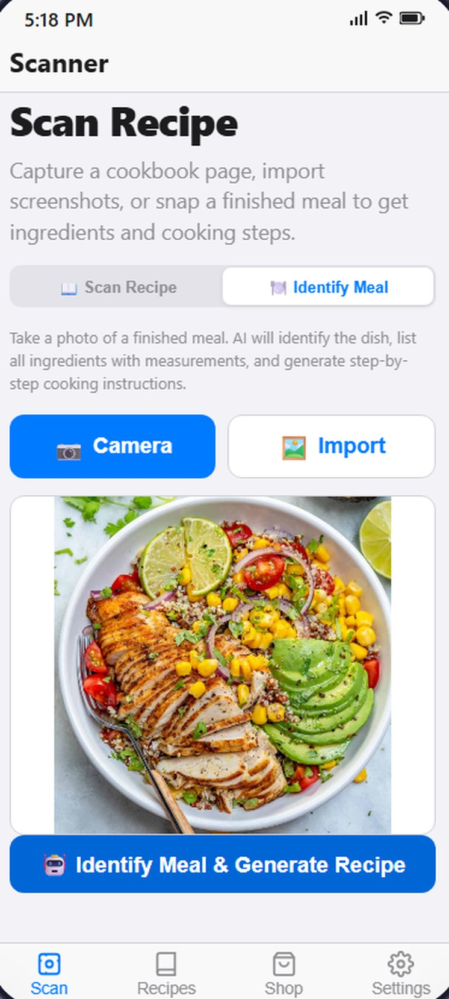
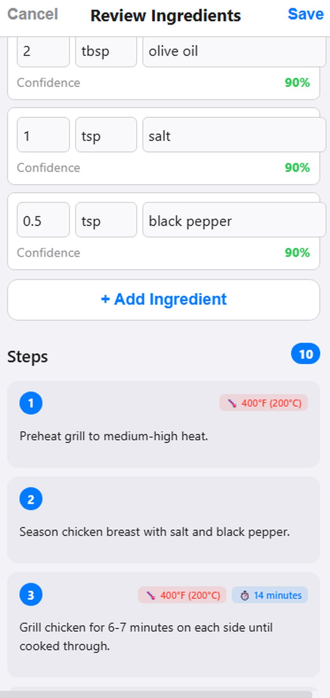
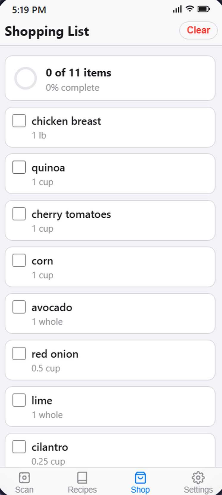
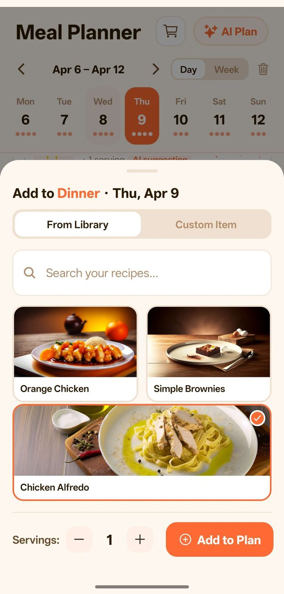
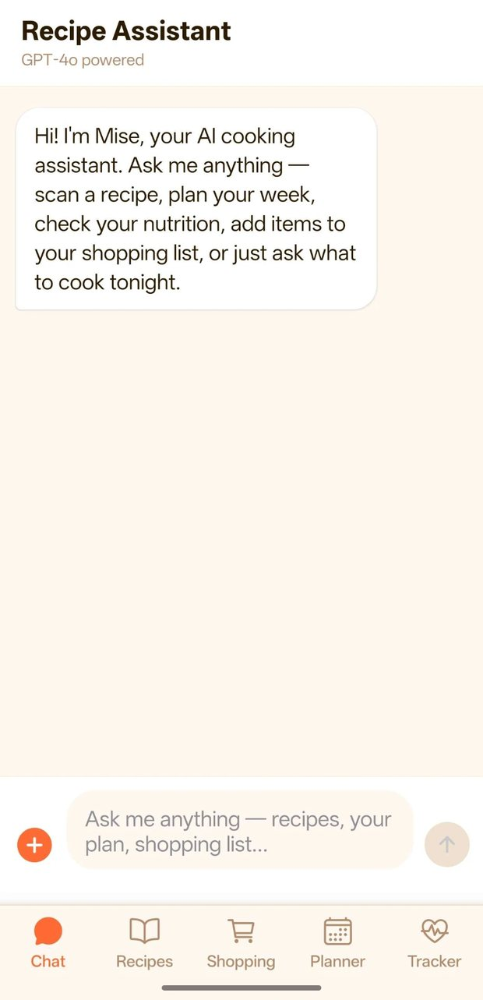
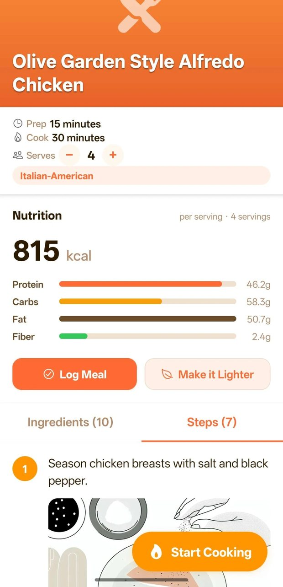

The short version
a two-minute read- The question
- Recipes end up scattered across screenshots, bookmarks and cookbooks, and most people give up on calorie tracking because typing in every ingredient is tedious. Could one app fix both?
- What we built
- A phone app for iPhone and Android that saves a recipe from a link, a photo, a file or a conversation, works out its nutrition, talks you through cooking it, plans your week and sends the shopping list to Walmart.
- What came out of it
- Testing changed the product twice. People pasted links three times as often as they photographed pages, and they asked for calorie counts and spoken steps before we had built either. All nine people in the final round said they would use it regularly, and the judges asked to be told when it reached the App Store.
- My part
- I built the first version in February and led the build of the final one in April: the chat assistant, cooking mode, nutrition tracking, the meal planner and onboarding. About three quarters of the final app’s code is mine.
- 3 to 1
- links pasted for every page photographed, so the link became the first option
- 9 of 9
- testers in the final round said they would use it regularly
- 75%
- of the final app’s code is mine, by line
01February
It started as a scanner, and the first test broke our main assumption
The class asked each team to find a real problem and build an AI product around it. Ours was the cook who keeps recipes in five places and copies ingredients onto a shopping list by hand. The first version, which I built in February, did one job. You photographed a cookbook page, GPT-4o read the ingredients and steps off it, and the app turned them into a list you could tick off at the store.
The whole idea rested on people trusting what the AI read, so before writing much code we tried to break that with a clickable mockup. Three people scanned a printed recipe card, and the result they got back had two mistakes planted in it: one ingredient was missing and one quantity was wrong. Not one of the three caught both. One accepted the list without looking, one noticed the wrong number, and one noticed the missing ingredient.
People don’t proofread a list. They check it for whatever they were already worried about.
That shaped how the app shows its work. Instead of a block of text, every ingredient gets its own row with separate boxes for the amount, the unit and the name, so that a misread stands out on its own, and the February version also showed how sure the AI was about each line. In the final round of testing, two people caught parsing mistakes this way without being told to look.



Photograph a page, check what the AI read, take the list to the store.

Save a recipe from anywhere, cook it with the app talking you through it, plan the week, shop.
02Listening
The people we tested with asked for a different app
Between February and April the team ran four rounds of testing, and each round changed what we built next. Two findings mattered more than the rest.
The camera wasn’t the main way in
We had built everything around photographing a cookbook. When people had every option in front of them, they pasted a link about three times as often as they took a photo, because most of their recipes were already online. So the link moved to the top of the menu. The camera stayed, because it was the moment people remembered: one tester scanned her mother’s handwritten lasagna card and couldn’t quite believe it had read the handwriting.
How often testers reached for each way of adding a recipe when both were available.
They asked for features we hadn’t planned
In the second round, two people independently asked whether the app remembered how many calories they had eaten, and another person wished it would just read the steps to them. Neither feature was in our plan. Both went in, and the calorie tracker turned into the feature people reacted to most. It works because logging stops being a chore of its own: you cook in the app, one tap logs the meal, and the tracker fills itself.
Wait, so it counts the calories for me when I cook? I don’t have to type everything in?
One more moment stuck with us. Before we showed him the shopping tab, a tester described, in his own words, the exact feature we had built: “It’d be cool if you could just get a recipe and it would add everything to your Walmart pick-up order.” He then sent a list to his real Walmart cart, saw the items arrive, and showed his wife on the spot.
03What I built
One assistant that can work the whole app
In April the app was rebuilt as a real phone app. A teammate set up the new base first: the ways to import a recipe, the shopping list and the Walmart search. Over the next four days I built most of what turned it into Mise, in five steps: a chat home screen that understands recipes, a new recipe page with cooking mode, a redesigned editor with collections and a warm look, then nutrition tracking with spoken steps and timers. After that came the meal planner, onboarding, and the assistant that ties it all together.
The assistant is the part I’m proudest of. The home screen is a chat, and anything you type or photograph goes to GPT-4o along with a short summary of where you are in the app: how many recipes you have, what’s on the list, what you’ve eaten today and what you’re cooking. I wrote its instructions so that every reply comes back as data in one of three shapes, and the app acts on each shape differently. Pick a message to see it.
You type
GPT-4o replies with
The app
The three reply shapes and the action names are the ones in the app’s instructions to the model. The messages and replies are examples written for this page.
That design is what lets one chat do so much. A recipe is saved straight to the library. A question about technique or a substitution gets a short answer. And a request to open the planner, add eggs to the list or start an eight-minute timer is carried out by the app itself, so the model never touches the phone directly and can’t do anything the app doesn’t allow. The same assistant is available inside cooking mode, where your hands are usually full.
Saving feels instant because the slow work waits
The AI calls are slow, a few seconds each, and a recipe needs several of them. So saving only writes the recipe to the phone, which takes no time at all, and three jobs then run in the background while you carry on. By the time you open the recipe, it usually has its nutrition, a photo and pictures for its steps.


The recipe on the right shows what those jobs leave behind: the nutrition per serving, a button that logs the meal to the tracker, another that asks GPT-4o for a lighter version of the recipe, and a drawing under each step.
Cooking mode
Cooking mode fills the screen with one step at a time and keeps the phone from going to sleep. It reads each step aloud, you swipe to move between steps, and a timer with a countdown ring tells you out loud when your dish is ready. It came straight out of that tester who wanted the steps read to them, and several testers said it felt different from any cooking app they had used.
04The hard parts
What took longer than it should have
Signing requests to Walmart. Walmart’s product search wants every request signed with a private key, and during testing the app runs inside Expo Go, which doesn’t include the crypto tools a server would use. I tried the browser’s built-in WebCrypto, which Expo Go doesn’t have either, then a different way of loading the key from the settings file. In the end a small JavaScript library, node-forge, was the approach that worked on both iPhone and Android.
Pictures for every step. A recipe with ten steps needs ten illustrations, so I tried three other image models, two of them free, before settling. One added an outside service we didn’t want to depend on, one kept failing on its model name, and the third didn’t hold up either, so the app went back to DALL·E 3 for everything.
The iPhone layout. Most of the testing had happened on Android. On an iPhone the tab bar disappeared entirely and content ran under the edges of the screen, so I replaced every fixed margin in the app with the phone’s real safe areas.
The one target we missed. Reading a photographed page took about 14 seconds on average, against our target of 10, because GPT-4o’s image reading alone takes 12 to 18 seconds. We couldn’t make the model faster, so the app stopped making people wait for it: you keep using the app while the page is read.
05How it went
Five of our six targets met, and a clear list of what to fix
Speed and accuracy were the floor, the things that had to be good enough not to get in anyone’s way. The app read ingredients correctly 94% of the time across five test recipes and saved a recipe from a link in about eight seconds. It didn’t crash once in any test session.
I also rewrote how we judged success. Our first plan measured the app by its speed and accuracy, and by the end that felt like the wrong question. What mattered was whether people did something different because of it. Did they finish the whole flow without help? Did they describe a feature before we showed it? Did they show it to someone else? Those became the measures in our final presentation.
The best measure came after the presentation itself. The first thing the judges asked, some of them from Adobe, was to be told when the app was out on the App Store. They said it had gone past what they expected and that they would use it themselves. After class our professor told the team to keep going with it, because it could become a real product.
06Next
What I would fix first
Testing found two bugs that break trust, and trust is what a tracker runs on. Logging a meal recorded every serving of the recipe instead of the one you ate, and Walmart prices were sometimes about six dollars off. One tester put it simply: “I’d prefer no price if it’s going to change.” I would fix the logging, and label prices as estimates until they can be trusted.
The bigger lesson was that people agree on the start of the journey and split at the end. Everyone wanted the library, the cooking mode and the tracker. At the shopping step, people who order pickup wanted the Walmart cart, people who shop in person and pick their own produce wanted a plain list in Apple Notes, and people who shop at several stores wanted prices compared. So I would add the export to Notes next, since it costs almost nothing to build, and then a warning for allergens such as gluten, which one parent asked for before anything else.
07My part
Who built what
This was a team of three, and the others did real work. One teammate built the new base the April version started from, including the import screens, the shopping list and the Walmart search, and fixed a long tail of bugs in the final days. The other ran much of the customer research and kept our documents and slides in shape. The chart below counts every line of the final app’s code by who last wrote it.
I also built the February version, the slides that show how the app changed from round to round, and the rewrite of our success measures described above.
Method notes
stack, decisions and numbers
- Context
- Applied AI Projects at BYU, February to April 2026, in a team of three. The midterm version in February was a web demo of a recipe scanner; the final version in April was a React Native app for iPhone and Android.
- Stack
- React Native with Expo SDK 54 and Expo Router, in JavaScript. GPT-4o for reading recipes from photos and text, the chat assistant, nutrition estimates, “Make it Lighter” rewrites and the meal planner. DALL·E 3 for cover photos and step illustrations. SQLite on the phone (11 tables), so everything works offline. expo-speech for reading steps aloud, node-forge for signing Walmart requests.
- The assistant
- One prompt, answered as JSON in one of three shapes: a recipe (title, servings, times, ingredients with amounts and units, steps), an answer (plain text), or an action (open a tab or the planner, search the library, add items to the shopping list, start a timer). Each request carries a short summary of the app’s state: recipe count and titles, items on the list, calories eaten against the goal, the week’s plan and the recipe being cooked.
- Why actions instead of letting the model do things: the app stays in control, every action is something the interface already supports, and a bad reply can at worst open the wrong tab.
- Background jobs
- Saving writes to SQLite and returns at once. Nutrition, the cover photo and all step illustrations are then requested in parallel and written back when they arrive.
- Testing
- Four rounds of research; the final round alone had nine sessions. The midterm test planted two errors in a scan result; none of three people caught both, which led to the per-field ingredient editor. The final round tested speed against each person’s usual method, the Walmart cart, which way people chose to add recipes, and whether automatic calorie tracking mattered.
- Numbers to remember
- Ingredients read correctly: 94% across five recipes (target 90%). Saving from a link: about 8 s (target 10). Reading a photo: about 14 s (target 10), because GPT-4o’s image reading takes 12 to 18 s. Zero crashes in testing. Links chosen about three times as often as photos. Nine of nine final testers would use it regularly; eight of nine backed the Walmart cart. 75% of the final code (9,576 of 12,706 lines in the app’s screens and services, counted with git blame) is mine.
- Known problems
- Logging a meal counted every serving instead of one. Walmart prices were sometimes about $6 off. Reading a photo misses the 10-second target.
- Code
- A public copy of the team’s repository is at github.com/RumitOsu/mise, with its full commit history. The notes from customer interviews were taken out of it, and testers are numbered instead of named.